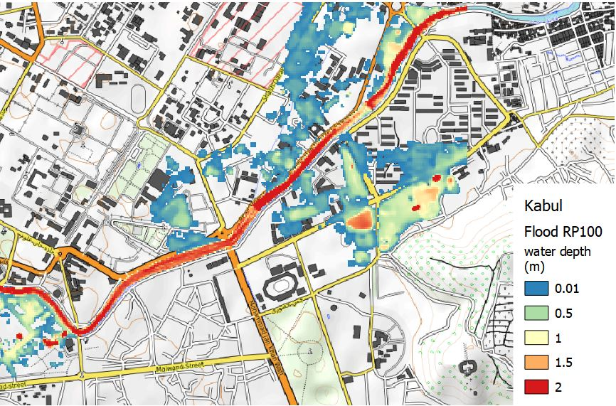
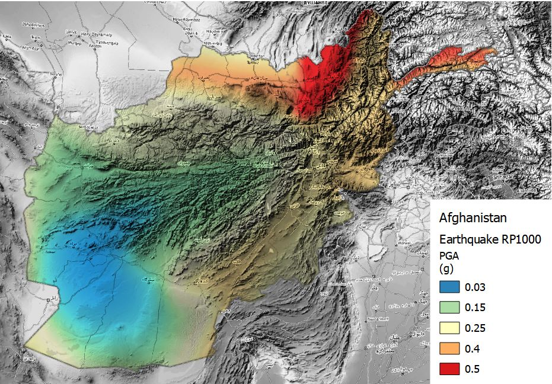

Hazard
Schema attributes
The hazard schema stores data about the intensity and occurrance probability of physical hazard phenomena such as floods, eartquakes, wildfires or others. The specific hazard process can be defined and measured with a specific intensity unit. For example, earthquake hazard may be represented as ground shaking, liquefaction or ground displacement.
The schema specifies which type of analysis and data methodology that has generated the dataset. It supports either simulated probabilistic scenarios and empirical observations. If the dataset has been produced for a specific location, such a city, the name of the location can be included.
| Required | Attribute | Description | Type |
|---|---|---|---|
| * | Hazard type | Main hazard type from list of options |
|
| * | Analysis type | Type of analysis that generated the data |
|
| * | Calculation method | The methodology used for the modelling of hazard |
|
| Geographic area | Specific location for which the dataset has been developed | Name of location |
When the scenario modelled refers to a specific period of time, this can be specified in terms of dates, period span and reference year. For example, an observed flood event that occurred from 1.10.2009 (time start) to 3.10.2009 (time end), spanning over 3 days (time span). When precise time collocation is unknow or inapplicabile, a general reference date such as "2009" is used to identify events (time year). This is also useful to specify future scenario, e.g. time year: 2050.
| Required | Attribute | Description | Type |
|---|---|---|---|
| Time start | The time at which the modelled scenario starts | Date | |
| Time end | The time at which the modelled scenario ends | Date | |
| Time span | The duration of the modelled period | Number | |
| Time year | One reference year to univocally identify the scenario | Date (year) |
When the hazard scenario is represented in probabilistic terms, the occurrance probability (frequency distribution) of hazard can be expressed in different ways. The most common way to communicate this is the "return period", expressed as the number of years after which a given hazard intensity could occurr again: RP 100 indicates that that event has a probability of once in 100 years. This attirbute can indicate individual layer frequency (RP100) or a range of frequencies for a collection of layers (RP10-100) The probability of occurrance is usually calculated on the basis of a reference period that provides observations: this period can be specified by start date, end date and time span. For example, an analysis of eartquake frequency based on seismic observations from 1934 (occurrance time start) to 2001 (occurrance time end), for a total count of 66 years (occurrance time span).
| Required | Attribute | Description | Type |
|---|---|---|---|
| Frequency type | The frequency of occurrence of the present event |
|
|
| Occurrance probability | For probabilistic scenario, the occurrance probability is expressed accordig to frequency type | Text | |
| Occurence time (start) | Start date of the period used to infer the occurrence probability | Date (year) | |
| Occurence time (end) | End date of the period used to specify the occurrence probability | Date (year) | |
| Occurence time (span) | The duration of the period used to specify either the frequency or the occurrence_probability | Number of years |
The schema distinguish between the hazard and process represented and the hazard and process identified as the cause, or concause for the manifestation of the represented hazard. For example, a dataset represent landslide hazard that is triggered by an earthquake will have Hazard type: Landslide; Trigger hazard type: Earthquake. The unit of measure refers to the represented hazard and process. A description can be added to cover additional information not included in the schema.
| Required | Attribute | Description | Type |
|---|---|---|---|
| Trigger hazard type | The hazard type that has triggered the event (if any) | Hazard type | |
| Trigger process type | The process type that triggered the event (if any) | Process type |
The hazard dataset could include one or more footprints for the same event, where each is one possible realisation (i.e. one footprint could represent minimum, another footprint the average and another one the maximum). The event uncertainty can be represented explicitly, through the inclusion of multiple footprints per event.
| Required | Attribute | Description | Type |
|---|---|---|---|
| * | Hazard process | Specific hazard process | Process type |
| * | Unit of measure | Intensity measure of the process | Option list |
| Description | Provides additional information about a specific event | Text | |
| Data uncertainty | The typology of uncertainty, if considered | Text |
Below is the list of all hazards and related process types:
Examples
Hazard data are most often represented by geospatial grids (raster); sometimes they are represented by points or polygons.
Flood hazard maps for Kabul
Schema attributes for flood hazard map related to occurrance probability of a river flood event with a return period of once in 100 years over Kabul, Afghanistan. The hydrological data used for modelling the intensity of floods is derived from observations over the period 1958-2001 (44 years). The hazard intensity is measured as water depth, in meters. These information cover all mandatory fields, and few optional fields.

| Required | Attribute | Example |
|---|---|---|
| * | Hazard type | Flood |
| * | Analysis type | Probabilistic |
| * | Calculation method | Simulated |
| Geographic area | Kabul | |
| Frequency type | Return Period | |
| Occurrance probability | 100 years | |
| Occurence time (start) | 1958 | |
| Occurence time (end) | 2001 | |
| Occurence time (span) | 44 years | |
| * | Hazard process | River flood |
| * | Unit of measure | Water depth (m) |
Earthquake hazard maps for Afghanistan
Schema attributes for earthquake hazard map related to occurrance probability of an event with return period of once in 1000 years over Afghanistan. The seismic data catalogue behind the calculation of occurrance probability start from year 800, covering a period of 1200 years. The hazard intensity is measured as Peak Ground Acceleration, expressed in (g).

| Required | Attribute | Example |
|---|---|---|
| * | Hazard type | Earthquake |
| * | Analysis type | Probabilistic |
| * | Calculation method | Simulated |
| Frequency type | Return Period | |
| Occurrance probability | 1000 years | |
| Occurence time (start) | 800 | |
| Occurence time (end) | 2001 | |
| Occurence time (span) | 1200 years | |
| * | Hazard process | Ground motion |
| * | Unit of measure | PGA (g) |
Previous version (as in the GH issue)
The Event set stores one or more scenarios for a specific hazard. The main hazard type is defined by a specific code defined in common tables. Key attributes are:
| Required | Attribute | Description | Example |
|---|---|---|---|
| * | Hazard type | Code provided in common tables | FL for Floods |
| description | General details about this set of layers | Simulated flood depth at country scale | |
| * | is_prob | Probabilistic or deterministic analysis. | TRUE for probabilistic |
Each Event is characterised by three main parameters: the methodology which originated the dataset; the specific occurrance probability, or frequency; and the main and secondary trigger processes which comes before the rapresented hazard in the cascade of events, and are identified as cause, or concause for the manifestation of the represented hazard.
| Field name | Description | Example | |
|---|---|---|---|
| * | calculation_method | The methodology used for the calculation of this event | Simulated for model simulations; Observed for empirical data; Inferred for models elaborated on empirical data (?) |
| frequency | The frequency of occurrence of the present event | 0.01 meaning probability of once in 100 years | |
| occurrence_probability | The occurrance probability | ?? | |
| occurence_time_span | The duration (years) of the period used to specify either the frequency or the occurrence_probability | 100 | |
| trigger_hazard_type | Hazard type that triggered the event | CS (Convective Storm) | |
| trigger_process_type | Process type that triggered the event | TCY (Tropical Cyclone) | |
| description | Provides additional information about this specific event | The flood has been caused by heavy rainfall during cyclone Karen |
For each Event, one more Footprint_set can be available, where each is one possible realisation of the event, i.e. one footprint could represent minimum, another footprint the average and another one the maximum. In this way, the event uncertainty can be represented explicitly, through the inclusion of multiple footprints per event. Hazard footprints can be assigned an occurrence frequency, and can represent a scenario footprint or return period hazard map. Inclusion of an event start and end time enables description of long-duration events.
| Field name | Description | Example | |
|---|---|---|---|
| * | process_type | The typology of hazard process | FPF for Pluvial flood |
| * | imt | Intensity measure types | d_fpf:m for water depth |
| data_uncertainty | This attribute describes the typology of uncertainty | Min to Max range |
Original version (as from the other repo)
The data structure contains entities nested as follows:
Event_set ( Event ( Footprint_set ( Footprint ( Footprint_data) ) ) )
The "Event set" stores one or more scenarios for a specific hazard. One "Event" represents one specific scenario (e.g. RP100, or one historical event). For each Event, one more "Footprint_set" can be available. This is a container for one or several "Footprints" where each is one possible realisation of an event. Uncertainty in the event characteristics and hazard footprint can be represented explicitly, through the inclusion of multiple events in an event set, and many footprints per event. Hazard footprints can be linked to another 'trigger event' footprint to represent cascading hazards. Hazard footprints can be assigned an occurrence frequency, and can represent a scenario footprint or return period hazard map. Inclusion of an event start and end time enables description of long-duration events.
 ERD (hazard schema): hazard table contents (red) and links to common tables (yellow).
ERD (hazard schema): hazard table contents (red) and links to common tables (yellow).
Table: hazard.event_set
The "event.set" entity contains information on a set of events for a given area, with event set duration, description, bibliography and defines the event set as probabilistic or deterministic.
Table: hazard.event
The "Event" entity contains information about one specific scenario or hazard map included in an "Event Set". The information comprises event duration, occurrence probability or frequency, the hazard and process type, a link to a possible triggering event (for cascading events) and a text description for more context about magnitude, for example.
Table: hazard.footprint_set
The "Footprint set" entity contains a sub-group of the "Footprints" computed for an "Event"; all the "Footprint" in a "Footprint Set" have the same unit of measure, represent the same process type and their uncertainty is described in a homogenous way. Every "Footprint Set" instance will have the following attributes.
| Req | Field name | Type | Reference table | Description |
|---|---|---|---|---|
| * | id | INT | Unique number ID | |
| * | event_id | INT | hazard.event | The event.id parameter to which this footprint is associated |
| * | process_type | VARCHAR | cf_common.process_type | The typology of hazard process |
| * | imt | VARCHAR | Intensity measure types | |
| data_uncertainty | VARCHAR | This attribute describes the typology of uncertainty |
Table: hazard.footprint
The "Footprint" entity contains information on a specific realisation of an "Event". The uncertainty of a particular event is captured either by the construction of many footprints or by a single footprint which contains information about uncertainty.
| Req | Field name | Type | Reference table | Description |
|---|---|---|---|---|
| * | id | INT | Unique number ID | |
| * | footprint_set_id | INT | hazard.footprint_set | The footprint_set.id parameter to which this footprint is associated |
| trigger_footprint | INT | |||
| uncertainty_2nd_moment | FLOAT |
Table: hazard.footprint_data
The "Footprint_data" entity contains the footprint data: the value of intensity according to the intensity measure (IMT) described in "Footprint set", and the point location of the intensity value.
| Req | Field name | Type | Reference table | Description |
|---|---|---|---|---|
| * | id | INT | Unique number ID | |
| * | footprint_id | INT | hazard.footprint | The footprint.id parameter to which this footprint data is associated |
| * | the_geom | GEOM | Associated geometry data (point location) | |
| * | intensity | FLOAT | The hazad process intensity value in the IMT described in "Footprint set" |
Types
| ENUM name | Types | Description |
|---|---|---|
| calc_method_enum |
|
Type of calculation method applied to produce hazard footprint. |